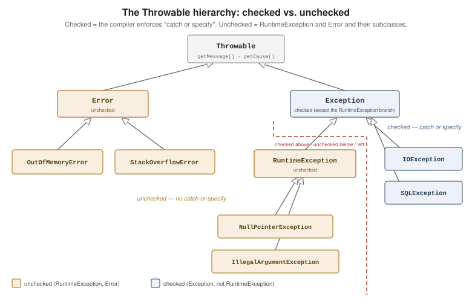

Exceptions
|
This content was generated with the assistance of AI and should be verified against the official documentation before being relied on in production. |
Java signals an abnormal condition by throwing an exception — an object that unwinds the call stack
until a matching catch handles it, or the thread terminates. The exception’s type decides whether the
compiler forces the calling code to deal with it. This page covers the class hierarchy, the try
statement in all its forms, and how to define and chain your own exceptions. References:
dev.java: Exceptions,
the Java Tutorials Exceptions lesson,
and Throwable.
The Throwable Hierarchy
Every thrown object is a
Throwable,
which splits into two subtrees:
Error for
unrecoverable JVM-level failures a program should not try to catch
(OutOfMemoryError, StackOverflowError), and
Exception for
conditions an application can reasonably handle.
RuntimeException
is the one branch of Exception that is unchecked.

Checked exceptions — everything under Exception except the RuntimeException branch — are subject
to the catch or specify requirement: a method body that can raise one must either catch it or list
it in a throws clause, and the compiler enforces this. Unchecked exceptions
(RuntimeException, Error, and their subclasses) carry no such obligation; they usually indicate
bugs — NullPointerException, IllegalArgumentException,
ArrayIndexOutOfBoundsException — that are better prevented than caught. See
The Three Kinds of
Exceptions and
Catch or Specify
Requirement.
import java.io.IOException;
import java.nio.file.*;
// checked: IOException must be caught or declared
static String readFirstLine(Path path) throws IOException {
try (var reader = Files.newBufferedReader(path)) {
return reader.readLine();
}
}
// unchecked: no throws clause, the caller is not forced to handle it
static int parsePort(String text) {
int port = Integer.parseInt(text); // throws NumberFormatException (unchecked)
if (port < 1 || port > 65_535) {
throw new IllegalArgumentException("port out of range: " + port);
}
return port;
}try/catch/finally and Multi-Catch
A try block is followed by zero or more catch clauses and an optional finally that runs no matter
how the block exits — normal completion, a caught exception, or one propagating out. A single catch
can handle several unrelated types with the | syntax. See
Catching and Handling
Exceptions.
import java.io.IOException;
try {
var config = load(path);
apply(config);
} catch (IOException | IllegalStateException e) { // multi-catch: one handler, two types
System.err.println("could not start: " + e.getMessage());
throw e; // e is implicitly final in a multi-catch
} catch (RuntimeException e) {
System.err.println("unexpected: " + e);
throw e;
} finally {
releaseLock(); // always runs
}Catch clauses are tested top to bottom, so a more specific type must come before a more general one:
writing catch (Exception e) ahead of catch (IOException e) is a compile error because the second
clause is unreachable.
A return, break, or continue inside finally silently discards any exception or return value
in flight from the try or catch block. Never put a control-flow statement in finally. See
The finally Block.
static int broken() {
try {
throw new IllegalStateException("boom");
} finally {
return -1; // swallows the exception completely; the caller just sees -1
}
}try-with-resources and AutoCloseable
A resource declared in the try (...) header is closed automatically when the block exits, in the
reverse of declaration order, whether it exits normally or by exception. The resource type must
implement
AutoCloseable
or its subinterface
Closeable, whose
close() is narrowed to throw only IOException. See
The
try-with-resources Statement.
class Resource implements AutoCloseable {
final String name;
Resource(String name) { this.name = name; System.out.println("open " + name); }
void use() { System.out.println("use " + name); }
@Override public void close() { System.out.println("close " + name); }
}
try (var a = new Resource("A");
var b = new Resource("B")) { // an effectively-final local may also be listed by name
a.use();
b.use();
}
// open A / open B / use A / use B / close B / close AIf the try block throws and a close() also throws, the close() failure is suppressed:
attached to the primary exception instead of replacing it. Retrieve suppressed exceptions with
Throwable.getSuppressed().
class Faulty implements AutoCloseable {
@Override public void close() { throw new IllegalStateException("close failed"); }
}
try {
try (var f = new Faulty()) {
throw new RuntimeException("work failed"); // primary exception
}
} catch (RuntimeException e) {
System.out.println(e.getMessage()); // work failed
for (Throwable s : e.getSuppressed()) {
System.out.println(" suppressed: " + s.getMessage()); // close failed
}
}A hand-written finally that calls close() gets this backwards: the close() failure replaces the
real error and the original is lost. Always prefer try-with-resources — see also
I/O and Files.
Throwing, Custom Exceptions, and Chaining
throw raises an exception; a throws clause on the method signature declares the checked types it may
let propagate. A custom exception is a class extending
Exception
(checked — callers must handle it) or
RuntimeException
(unchecked). Give it at least a message constructor and a (message, cause) constructor. See
How to Throw Exceptions and
Specifying the Exceptions
Thrown by a Method.
import java.io.IOException;
import java.nio.file.*;
class ConfigException extends Exception { // checked
ConfigException(String message) { super(message); }
ConfigException(String message, Throwable cause) { super(message, cause); }
}
static Config load(Path path) throws ConfigException {
try {
return parse(Files.readString(path));
} catch (IOException e) {
// chaining: keep the low-level cause, add domain context
throw new ConfigException("cannot read config at " + path, e);
}
}Exception chaining preserves the original failure as the cause. Pass it to the constructor, or call
initCause
once; read it back with
getCause().
A printed trace shows the whole chain under Caused by:. See
Chained Exceptions.
Exception in thread "main" com.example.ConfigException: cannot read config at /etc/app.conf
at com.example.Loader.load(Loader.java:19)
at com.example.Main.main(Main.java:11)
Caused by: java.nio.file.NoSuchFileException: /etc/app.conf
at java.base/sun.nio.fs.UnixException.translateToIOException(UnixException.java:92)
... 2 moreRead a trace bottom-up for the root cause and top-down for where it surfaced; the first line under each
frame block is the call site. Programmatic access is via
getStackTrace().
assert and -ea
An assert statement checks an invariant that should never be false in a correct program. Assertions
are disabled by default and only execute when the JVM is started with -ea (or -enableassertions),
so they are a development and testing aid, not input validation for public methods — use
IllegalArgumentException or java.util.Objects.requireNonNull for that. See
JLS 14.10, The assert
Statement.
private int midpoint(int low, int high) {
assert low <= high : "low > high: " + low + " > " + high; // AssertionError when -ea and false
return low + (high - low) / 2;
}java -ea com.example.Main # assertions on (tests, local runs)
java com.example.Main # assertions off (production default)Control Flow: try / catch / finally / Auto-Close
The order is fixed: declared resources are closed before any catch clause runs, and finally
always runs last, after both. The diagram shows the no-exception path and the exception path.
See Also
-
I/O and Files —
IOException,UncheckedIOException, and why streams belong in try-with-resources. -
Optional — returning "no value" instead of throwing when absence is an ordinary outcome.
-
Records and Sealed Classes — modelling a recoverable success/failure result as data.
-
Annotations and Reflection —
ReflectiveOperationExceptionand unwrappingInvocationTargetException.